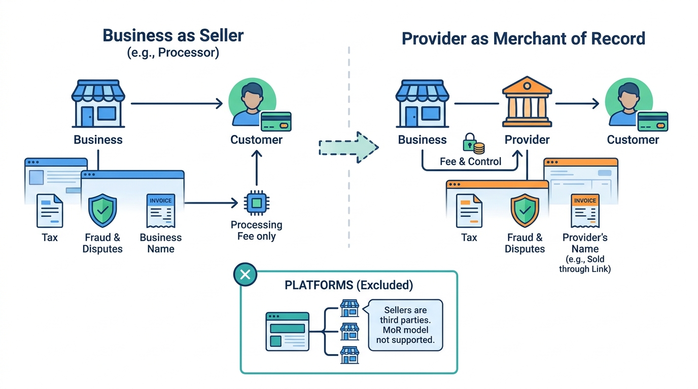

Part VI — REVENUE: Billing, Tax and Recognition
Who Is the Seller? Merchant of Record as an Operating Model
AI-assisted: researched and written with Claude Code; illustrations generated with Gemini. How this works

Image generated by Google Gemini (gemini-3-pro-image-preview)